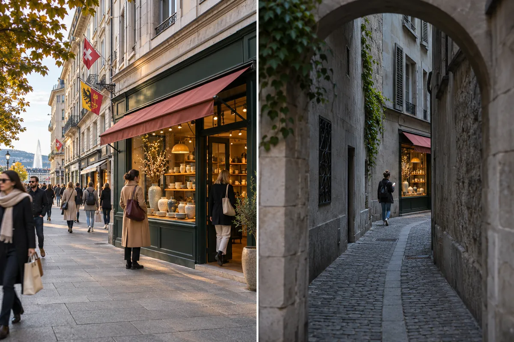

Accueil / Blog / Intelligence artificielle
Créer son site avec l’intelligence artificielle : votre vitrine mérite d’être vue
Votre site est en ligne et il vous ressemble. Reste à le faire découvrir : voici comment une vitrine bien placée, un bon accueil et un regard professionnel attirent vos premiers clients à Genève.

Ça y est, votre site est en ligne. Vous avez changé la photo d’accueil trois fois, hésité entre deux couleurs et envoyé le lien à un proche : « Alors, tu en penses quoi ? »
Créer son site avec l’intelligence artificielle donne une vraie satisfaction. Puis arrive une nouvelle question : comment faire venir les premiers clients ?
Pour y répondre, parlons de quatre choses très concrètes :
- Le petit coup d’œil professionnel qui change le résultat.
- La vitrine que l’on découvre… ou devant laquelle personne ne passe.
- L’accueil qui donne envie de rester et de vous contacter.
- La suite de votre projet avec Websituation.
1. Comme chez le coiffeur, le regard compte
Une brosse, un miroir, un peu de patience : on peut très bien se coiffer soi-même. Mais chez un bon coiffeur, il y a ce petit ajustement auquel on n’avait pas pensé et qui change l’ensemble.
Pour votre site, c’est un peu pareil. Claude Code peut vous aider à donner forme à vos idées. Le professionnel apporte son expérience pour :
- Trouver les mots justes, ceux dans lesquels vos clients reconnaissent leurs besoins.
- Mettre les bonnes informations au bon endroit, pour une lecture naturelle.
- Soigner les détails, jusqu’au formulaire et à l’affichage sur téléphone.
Votre site vous ressemble et devient plus agréable à utiliser. Il mérite maintenant de rencontrer son public.
2. Une belle vitrine, oui… mais dans quelle rue ?
Imaginez : votre boutique est prête. Les produits sont joliment présentés, l’éclairage est chaleureux, tout donne envie d’entrer. Seulement, elle se trouve au fond d’une petite rue sombre. Les clients habituels connaissent l’adresse ; les autres passent ailleurs.
Dans une rue animée du centre de Genève, ou rue du Rhône, cette même vitrine aurait davantage d’occasions d’être découverte.
Sur Internet, le référencement naturel, ou SEO, aide à créer ces occasions. Il permet de travailler votre visibilité auprès des personnes qui cherchent vos services, sans connaître votre nom.
Cela demande notamment de :
- Comprendre leurs recherches, comme « fleuriste à Cologny ».
- Répondre à leurs questions, avec des pages utiles et précises.
- Structurer le site, pour faciliter sa lecture et sa découverte par Google.
Le référencement de votre site se construit progressivement. Et lorsque les visiteurs arrivent, c’est à votre accueil de prendre le relais.
3. La porte est ouverte : donnons envie d’entrer
Vous poussez la porte d’un magasin. Vous aimez ce que vous voyez, vous trouvez facilement votre chemin et quelqu’un est disponible pour vous renseigner. Vous avez naturellement envie de rester.
Votre site peut offrir cette même expérience :
- Une offre compréhensible, sans devoir déchiffrer votre métier.
- Des réalisations et des avis, pour découvrir votre travail et vous faire confiance.
- Des pages agréables sur téléphone, même entre deux rendez-vous.
- Un contact à portée de clic, pour appeler, réserver ou demander un devis.
Trouver vos coordonnées devrait être simple : autant éviter le jeu de piste !
C’est ainsi qu’une visite peut devenir une conversation, puis une demande concrète. Le suivi de ces contacts vous aide ensuite à améliorer votre site.
4. Et si nous regardions votre vitrine ensemble ?
Chez Websituation, nous accompagnons les indépendants et les PME à Genève dans la création de leur site et leur référencement. Nous commençons par vous écouter : votre activité, vos clients, vos envies et votre budget.
Si vous avez déjà créé une première version avec l’intelligence artificielle, nous partons de ce travail pour identifier les améliorations qui auront le plus de sens pour vous.
Votre site est prêt à être montré. Aidons vos futurs clients à le découvrir.
À lire aussi
Tous les articles


Un projet de site ou de visibilité ?
Un premier rendez-vous gratuit pour faire le point sur vos besoins et votre budget.
Prendre rendez-vous